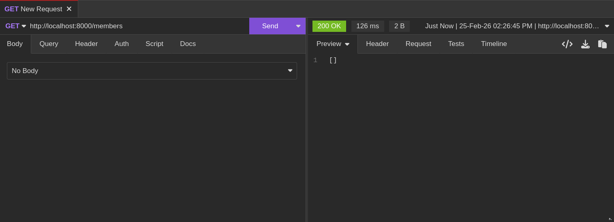

Building a CRUD REST API
Introduction
Having mastered the basics of FastAPI, we are now ready to take a significant step forward by developing a practical application. In this chapter, we will construct a Savings and Credit Cooperative Organization (SACCO) management application. SACCOS are member-owned financial cooperatives that allow groups to pool their resources for collective saving and loan provision, serving as an alternative to conventional banking systems.
In our SACCO application, members will have the ability to deposit savings, access loans based on their savings, repay loans with interest, and share in the profits generated from interest income. A vital aspect of such systems is the onboarding process. Our implementation will facilitate multiple groups registering under a single SACCO, with individual members joining specific groups.
In this chapter, we will lay the groundwork for the onboarding feature by implementing CRUD operations to manage members, marking our first complete CRUD application.
What is CRUD?
CRUD stands for the four fundamental operations for data management:
-
Create (C):
- Objective: To add new data.
- Action: Insert a new record or entity.
-
Read (R):
- Objective: To retrieve existing data.
- Action: Fetch data without making any modifications.
-
Update (U):
- Objective: To modify existing data.
- Action: Update attributes or values.
-
Delete (D):
- Objective: To remove data.
- Action: Delete a record or entity.
CRUD operations are essential for data management and are commonly utilized in applications that handle data persistence. In FastAPI Beyond CRUD, we will focus on extending FastAPI's capabilities beyond standard CRUD applications, exploring advanced features and use cases. However, before going into these aspects, we will first create a simple CRUD API using FastAPI.
A Simple CRUD API Implementation
Our straightforward CRUD API will feature several endpoints to perform CRUD operations on a basic in-memory database (utilizing Python lists). Below is a list of the endpoints that we will implement in our CRUD API.
| Endpoint | Method | Description |
|---|---|---|
| /members | GET | Retrieve all members of the SACCO. |
| /members | POST | Create a new member in the SACCO. |
| /members/{member_id} | GET | Retrieve details of a specific member by ID. |
| /members/{member_id} | PUT | Update details of a specific member by ID. |
| /members/{member_id} | DELETE | Remove a member from the SACCO by ID. |
The table above outlines various API endpoints, their corresponding HTTP methods, and their functionalities:
-
/members- GET: Retrieve all members - Description: This endpoint retrieves information about all members registered in the SACCO. When a client sends an HTTP GET request to/members, the server responds with details of all members. -
/members- POST: Create a member - Description: To add a new member to the SACCO, clients can send an HTTP POST request to/members. This operation involves creating and storing a new member based on the data provided in the request body. -
/members/{member_id}- GET: Get a member by ID - Description: By sending an HTTP GET request to/members/{member_id}, clients can retrieve detailed information about a specific member. Themember_idparameter in the path specifies which member to fetch. -
/members/{member_id}- PUT: Update a member by ID - Description: To modify the information of a specific member, clients can send an HTTP PUT request to/members/{member_id}. Themember_idparameter identifies the target member, and the request body contains the updated data. -
/members/{member_id}- DELETE: Delete a member by ID - Description: This endpoint allows clients to delete a specific member from the SACCO. By sending an HTTP DELETE request to/members/{member_id}, the member identified bymember_idwill be removed from the records.
With a clear plan for our simple API in place, we can now proceed to implement our CRUD API by integrating the functionalities outlined above into main.py. We will begin by creating simple list to serve as our in-memory database for members.
After establishing these lists, we will define the data models that will be utilized throughout our application.
# inside main.py
# ... additional code here
from pydantic import BaseModel
from typing import List, Optional
from enum import Enum
# additional code here
members: list["Member"] = []
class MemberStatus(Enum):
ACTIVE = "active"
INACTIVE = "inactive"
SUSPENDED = "suspended"
REJECTED = "rejected"
class Member(BaseModel):
id: int
first_name: str
last_name: str
address: str
phone_number: str
national_id_number: str
occupation: str
status: MemberStatus
The code above establishes the necessary data models for our endpoints. First, we define the MemberStatus enum, which indicates the status of a member in a SACCO, with possible values of active, inactive, suspended, and rejected.
Next, we introduce the Member model, which encapsulates the information we will store about individual group members.
We are making extensive use of type hints here, as evidenced by the specifications of the types of items stored in our lists.
Reading All Members (HTTP GET)
This route responds to GET requests made to /members, providing a list of all members in the SACCO. It ensures that the response adheres to the List[Member] model, guaranteeing consistency with the structure defined by the Member model.
@app.get("/members", tags=["Members"])
def get_members() -> list[Member]:
return members
FastAPI significantly simplifies the process of returning any JSON serializable object as a response. You should also be able to return Pydantic models as we have done in the example above using list[Member].
Note
JSON (JavaScript Object Notation) serialization involves transforming a data structure or object from a programming language (such as Python, JavaScript, or others) into a JSON-formatted string. This string representation can then be transmitted over a network or stored in a file, subsequently allowing deserialization back into the original data structure.
In Python, the following data types are natively serializable to JSON Lists, Dictionaries, Strings, Numbers (int, float), Tuples (converted to JSON arrays), Booleans, None (converted to JSON null)
Note
Some types like custom objects, datetime objects, and sets are not natively JSON serializable and require custom encoders or conversion before serialization.
This capability enables us to effortlessly respond with a list of member objects (which is currently an empty list of objects) when issuing a GET request to http://localhost:8000/members, as illustrated below:

Create a Member (HTTP POST)
from fastapi import FastAPI, status
# ...more code here
@app.post("/members", status_code=status.HTTP_201_CREATED, tags=["Members"])
def create_member(member: Member) -> dict:
members.append(member)
return {"message": "Member created successfully", "member_id": member.id}
In the code above, we have established a new endpoint accessible via a POST request at /members. This time, the route handler is provided with a parameter member, which is expected to conform to the Member model. We will explore how this functions shortly.
Next, we retrieve the member data and add it to our members list using the append method of the Python members list. Finally, we return a dictionary response indicating that the member has been created successfully.
To test this, we will create a new request to the URL http://localhost:8000/members and specify the HTTP method as POST. We will then set the request body to JSON using the menu, as illustrated below.

Next, we will make the request to the API with an empty body (an empty dictionary), which will trigger validation errors as defined in the Member model.

When we provide all the required fields, a successful response message will be returned along with a 201 response status code.

By default, all endpoints return a 200 status code, but we can customize the response status code by specifying it in the route path decorator, as demonstrated in this case.
@app.post("/members", status_code=status.HTTP_201_CREATED, tags=["Members"])
We can test this out by making a GET request to http://localhost:8000/members/

Get a member BY ID (HTTP POST)
@app.get("/members/{member_id}", tags=["Members"])
def get_member(member_id: int) -> Member | dict:
for member in members:
if member.id == member_id:
return member
return {"message": "Member not found"}
To retrieve the member by ID, we have created a new endpoint on the /members/{member_id} path. Its route handler takes a parameter member_id which is an integer and we then loop through all members to find the member with the member_id.
If we find it, we return it else we return a not found response. Keep in mind that we are storing Member objects in the members list which is JSON serializable. We are also making use of the return Type to allow FastAPI automatically validate what we return in our response (it has to be a dict or a Member object).

Update a Member by ID (HTTP PUT)
@app.put("/members/{member_id}", tags=["Members"])
def update_member(member_id: int, updated_member: Member) -> dict:
for index, member in enumerate(members):
if member.id == member_id:
members[index] = updated_member
return {"message": "Member updated successfully", "member": updated_member}
return {"message": "Member not found"}
The update endpoint is accessed via the /members/{member_id} path using the HTTP PUT method, which is designed for fully updating an existing resource. The route handler requires two parameters: member_id (the identifier of the member to update) and updated_member (a Member object containing the new data).
The function searches through the members list to find the member matching the provided member_id. When a match is found, it replaces the existing member data at that index with the updated information and returns a success message. If no matching member is found, it returns a "Member not found" response.
To validate the endpoint, you can test it in two scenarios. First, submit a request with incomplete data (missing required fields from the Member model) to see FastAPI's validation error responses. Second, submit a complete request with all required fields to verify that the member data is successfully updated.


Delete a Member by ID (HTTP DELETE)
Finally, the delete endpoint:
@app.delete(
"/members/{member_id}", status_code=status.HTTP_204_NO_CONTENT, tags=["Members"]
)
def delete_member(member_id: int) -> None:
for index, member in enumerate(members):
if member.id == member_id:
del members[index]
return
return {"message": "Member not found"}
The delete endpoint is accessed at the /members/{member_id} path using the HTTP DELETE method. The route handler accepts the member_id path parameter, which identifies the member to delete. The function iterates through the members list to locate the member with the matching ID. Once found, it removes the member from the list. If the member is not found, it returns a "Member not found" response.
All the member endpoints will look like this for now.
# inside main.py
from enum import Enum
from typing import Optional
from fastapi import FastAPI, Header, status
from pydantic import BaseModel
app = FastAPI()
members: list["Member"] = []
class MemberStatus(Enum):
ACTIVE = "active"
INACTIVE = "inactive"
SUSPENDED = "suspended"
REJECTED = "rejected"
class Member(BaseModel):
id: int
first_name: str
last_name: str
address: str
phone_number: str
national_id_number: str
occupation: str
status: MemberStatus
@app.get("/members", tags=["Members"])
def get_members() -> list[Member]:
return members
@app.post("/members", status_code=status.HTTP_201_CREATED, tags=["Members"])
def create_member(member: Member) -> dict:
members.append(member)
return {"message": "Member created successfully", "member_id": member.id}
@app.get("/members/{member_id}", tags=["Members"])
def get_member(member_id: int) -> Member | dict:
for member in members:
if member.id == member_id:
return member
return {"message": "Member not found"}
@app.put("/members/{member_id}", tags=["Members"])
def update_member(member_id: int, updated_member: Member) -> dict:
for index, member in enumerate(members):
if member.id == member_id:
members[index] = updated_member
return {"message": "Member updated successfully", "member": updated_member}
return {"message": "Member not found"}
@app.delete(
"/members/{member_id}", status_code=status.HTTP_204_NO_CONTENT, tags=["Members"]
)
def delete_member(member_id: int) -> None:
for index, member in enumerate(members):
if member.id == member_id:
del members[index]
return
return {"message": "Member not found"}
Conclusion
In this chapter, we successfully implemented a foundational CRUD API for managing SACCO members. This exercise provided practical experience in defining HTTP routes using the FastAPI framework, mapping standard CRUD operations to their appropriate HTTP methods, and using Python type hints to ensure data integrity. While our current implementation relies on a simple in-memory list for storage, it establishes the essential patterns for more complex data management.
CRUD operations form the cornerstone of most modern web applications, serving as the interface for core business logic. However, as applications grow in complexity, a single-file structure becomes difficult to maintain. In the next chapter, we will evolve our project by introducing a modular architecture using FastAPI routers, setting the stage for a more scalable and production-ready application.